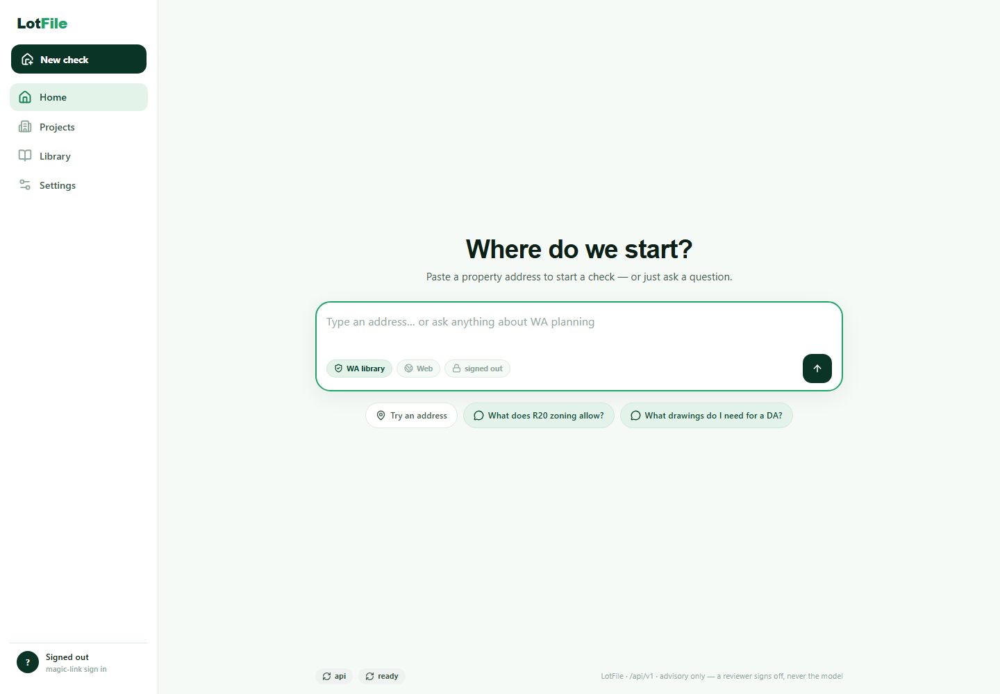
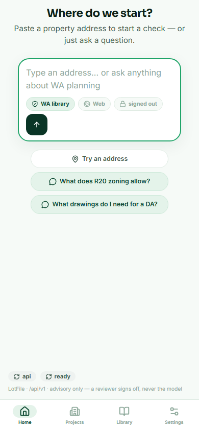

A
Address-first workspace
Start with the property, then attach sources, proposal facts, drawings, RFIs, and decisions to one file.
LotFile turns an address, council sources, drawings, and review notes into a structured planning workspace. The rule is simple: cite the official source, mark the gap, or send it to human review.
Private beta. Advisory workflow only. No submission-ready compliance claim is emitted without human signoff.


Start with the property, then attach sources, proposal facts, drawings, RFIs, and decisions to one file.
Official source versions are hashed, reviewed, chunked, and kept separate from metadata-only references.
Rules are promoted through review. Changed sources create new versions instead of silently changing answers.
Exports and final claims stay blocked until the evidence, calculations, citations, and reviewer signoff exist.
The live stack is real: public frontend, VPS API, Postgres, workers, source library status, and a governed beta posture. The honest demo is the workflow and product direction, not a final legal compliance engine.